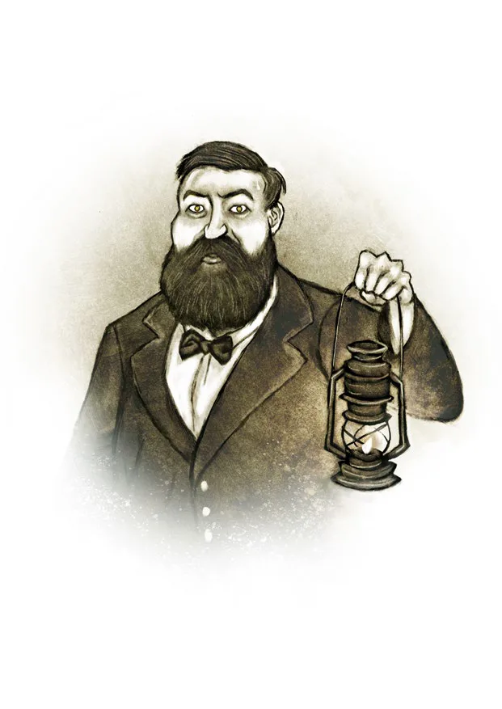
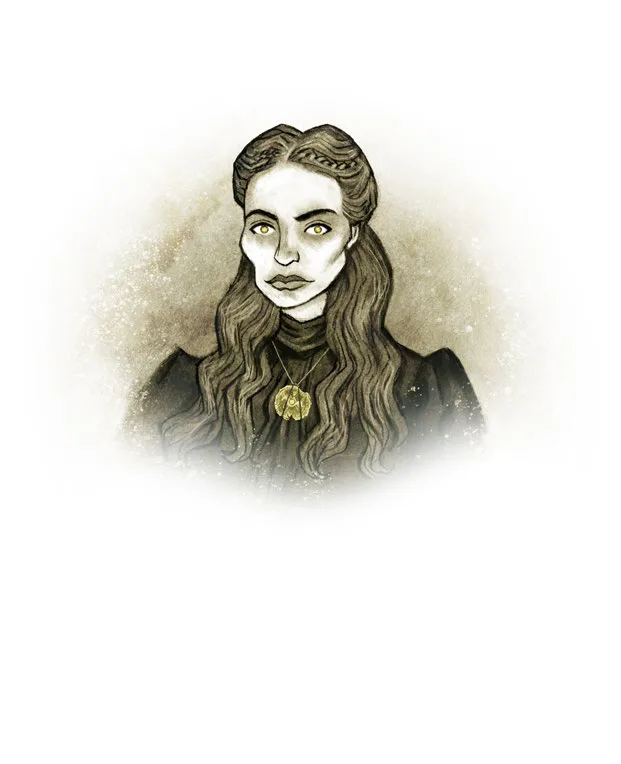
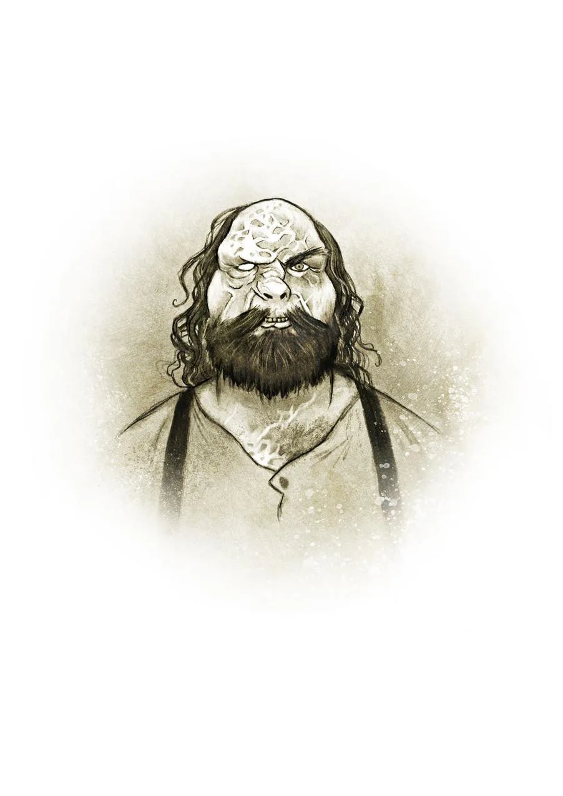
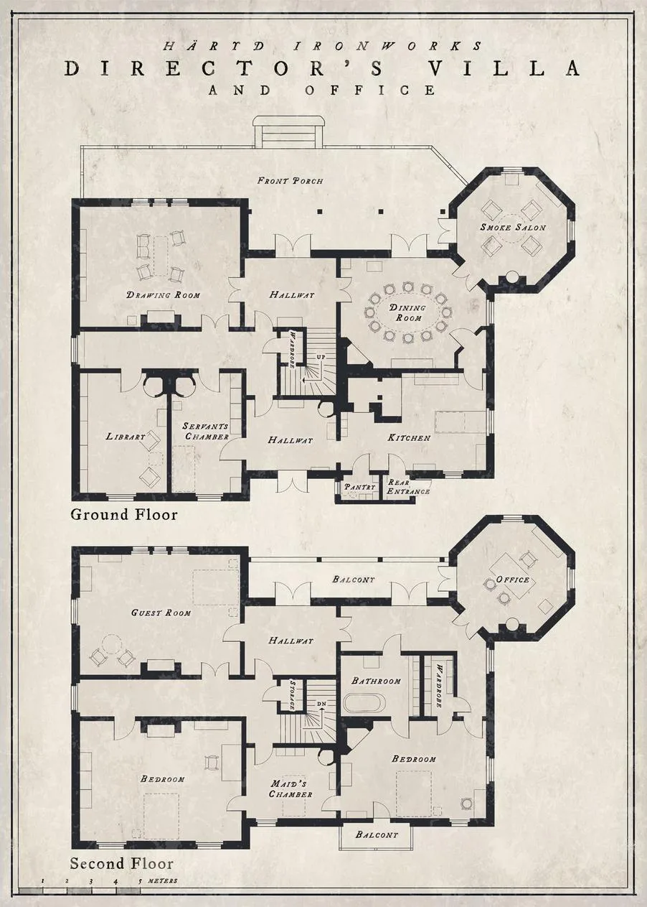

Direktorenvilla und KontorS. 38

August Härenstam
Beata Gideonsdotter
Schwein
Dieses rote, zweistöckige Holzgebäude mit einer großen weißen Veranda dient August Härenstam als Büro und Wohnhaus. Im Erdgeschoss liegen ein Salon, ein Speisezimmer, eine Bibliothek und die Küche, im Obergeschoss ein Büro, zwei große Schlafzimmer, eine Mädchenkammer und ein Gästezimmer mit vier Betten. August schläft im östlichen Schlafzimmer, Beata im westlichen (Alfreds altes Zimmer) und Schwein in der Gesindestube im Erdgeschoss.
Die Einrichtung ist ordentlich und elegant, aber nicht übermäßig prunkvoll. August verbringt die meiste Zeit in diesem Haus, und Schwein ist selten weit entfernt.
Herausforderungen
Kommen die Spielercharaktere unter einer Tarngeschichte hierher, empfängt August sie im Speisezimmer. Er ist misstrauisch, aber interessiert, wenn die Charaktere ein lukratives Angebot machen und eine Probe auf Manipulation bestehen. Er bietet an, sie eine Nacht im Gästezimmer übernachten zu lassen, bittet aber Schwein, ein Auge auf sie zu haben.
Sich unbemerkt in die Direktorenvilla zu schleichen erfordert eine gelungene Probe auf Heimlichkeit. Bei einem Misserfolg entdeckt Schwein oder einer der Erzjungen die Eindringlinge. Ein Versuch während der Erweckungsversammlung gibt +2 auf die Probe.
Versteckt in Augusts Schlafzimmer, unter seinem Riesenbett, steht eine verschlossene Geldkassette von über 50 Kilo. Sie zu bewegen erfordert pro Zone eine gelungene Probe auf Kraft …